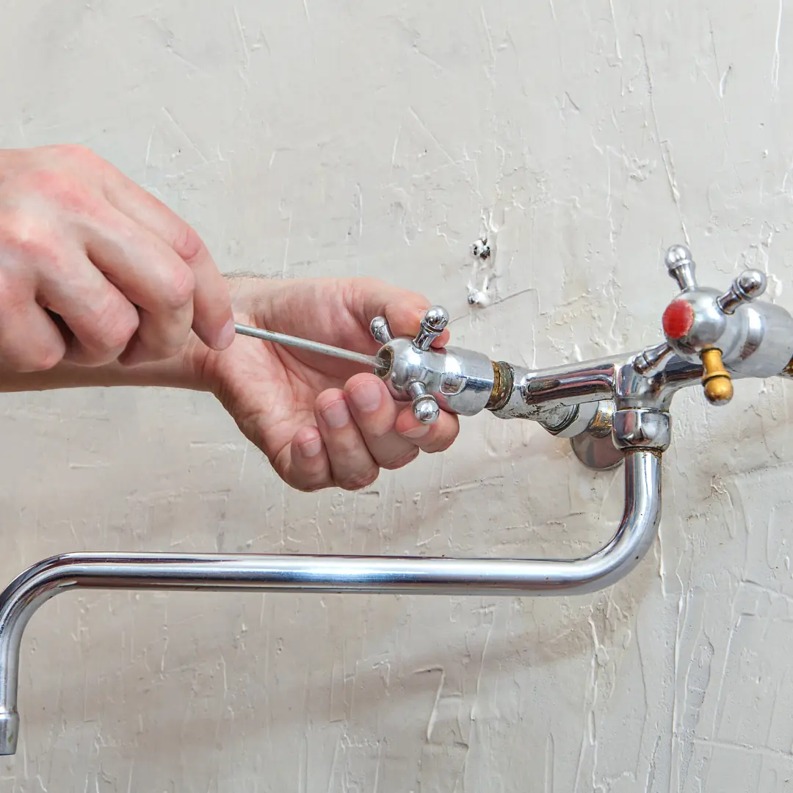

Post-Remediation Mold Testing in Burien
After mold removal, post-remediation mold testing in Burien checks that the work area is clean and dry before containment comes down or walls are closed. It's your independent check on the job.

Mold clearance testing: an independent check on the job
Post-remediation testing, often called clearance testing or post-remediation verification, is an inspection and sampling visit performed after mold remediation is complete. The tester confirms that visible growth is gone, that materials are dry, and that air and surface samples in the work area are consistent with normal, unaffected conditions.
It's most valuable when done by someone independent of the company that did the cleanup. A remediator testing its own work has an obvious conflict, and a third-party result gives you, your insurer, or a buyer more confidence. If you're earlier in the process, our Burien mold testing guide explains the full path from first signs to cleanup.
How a Burien post-remediation testing company tests your home
Clearance testing usually happens while containment is still in place, so if the area fails, the remediator can re-clean without spreading contamination to the rest of the house.
- Visual inspection. The first test is simple: there should be no visible mold, dust or debris in the work area. Many testers won't sample until the area passes visually.
- Moisture verification. Framing and remaining materials are measured to confirm they are dry. If the water source wasn't fixed, mold will return.
- Air sampling. Spore trap samples are taken inside containment, in other rooms, and outdoors for comparison.
- Surface sampling. Tape lifts or swabs from cleaned surfaces confirm that residue has been removed.
- Documentation. Photos of the cleaned area, readings and lab results become part of your records.
The tester compares results with the original mold inspection findings when available, so it helps to share the earlier report.
Signs you should book post-remediation testing near you
- Remediation just finished. Testing before containment comes down allows re-cleaning if needed.
- Walls about to be closed. Once drywall goes back up, problems inside the cavity are hidden again.
- Insurance claim. Insurers may want documentation that work was completed properly.
- Selling a home. Buyers often ask for evidence that a past mold issue was resolved.
- Buying a remediated home. Independent testing verifies the seller's cleanup claims.
- Lingering odor after cleanup. A remaining smell suggests missed growth or moisture.
- Sensitive occupants. Households with health concerns want confirmation before moving back in.
- Landlord or tenant dispute. Neutral results help both parties agree that conditions are back to normal.
What causes the problems post-remediation testing uncovers?
Clearance tests fail for a handful of predictable reasons. The most common is incomplete cleaning: fine dust and spores settle on surfaces inside containment and need HEPA vacuuming and wiping before they're gone. The second is missed growth, such as mold on the back side of a stud or on adjacent material outside the original scope.
The third is moisture. If the leak, condensation or crawl space problem behind the original growth wasn't fixed, materials stay damp and growth resumes. Finally, poor containment or negative air setup during the work can allow spores to migrate to other rooms. Knowing the original cause, whether it was a crawl space, attic or plumbing issue, helps the tester know where to look. Pages on crawl space and attic inspection cover those sources.
What can you check yourself first?
- Ask the remediator for their scope of work, photos and a description of what was removed.
- Confirm in writing that the moisture source was repaired, and by whom.
- Look at the work area yourself before the test. Visible dust or debris means it isn't ready.
- Keep containment sealed and fans running as the remediator instructed until the test.
Pro tipSchedule clearance testing before you book drywall, painting or flooring contractors. If the area fails, you'll avoid paying to undo finished work.
What to expect when you hire a post-remediation testing company
- Document review. The tester reviews the original findings and remediation scope.
- Visual check. The work area is inspected for debris, dust and remaining growth.
- Moisture check. Materials are measured to confirm they are dry.
- Air samples. Inside containment, in an unaffected room and outdoors.
- Surface samples. Taken from cleaned framing or surfaces as needed.
- Lab analysis. Samples are processed and compared against controls.
- Pass or fail report. You receive a clear result and, if it fails, what needs attention.
Post-Remediation Testing cost in Burien: what affects the price?
Providers set their own prices for post-remediation testing in Burien. These are the factors that shape a quote.
| Factor | Effect on the post-remediation testing quote |
|---|---|
| Number of work areas | Separate containments are sampled separately. |
| Samples required | More rooms mean more lab analysis. |
| Lab turnaround | Faster results help keep rebuild schedules on track. |
| Re-testing | A failed area will need a second visit. |
When do you need emergency post-remediation testing?
Clearance testing is time-sensitive rather than an emergency. Containment, air scrubbers and open walls disrupt daily life, and contractors are waiting to rebuild. Book the test as soon as the remediator says the area is ready. If you notice new water, odor or visible growth after remediation, call before closing anything up.
What should a remediation job include before clearance?
Clearance testing works best when the remediation itself followed accepted practice. Knowing what a proper job looks like helps you spot problems before the tester arrives.
- A written scope. The plan should state which materials will be removed, which will be cleaned, and how the moisture source is being fixed.
- Containment. The work area is sealed with plastic sheeting, with zipper doors for entry. Vents and returns in the area are covered.
- Negative air pressure. An air scrubber with a HEPA filter exhausts air from the containment so it stays at lower pressure than the rest of the house, keeping spores inside.
- Removal and bagging. Damaged porous materials are cut out, bagged inside containment and removed carefully.
- Detailed cleaning. Remaining surfaces are HEPA vacuumed and damp wiped, often more than once.
- Drying. Framing and remaining materials are brought back to normal moisture levels before anything is closed up.
Who should perform clearance testing?
Ideally, a tester with no financial connection to the remediation company. That separation is the main reason homeowners, insurers and buyers trust the result. Ask the tester directly whether they have any relationship with the contractor, and ask the contractor whether they expect third-party clearance as part of the job. Many reputable remediators welcome it, since a passing result documents the quality of their work.
If you used a provider for the original black mold testing or inspection, they may be well placed to do the clearance too, since they already know the starting conditions.
Which records should you keep after clearance?
Hold on to the full paper trail: the original inspection or test report, the remediator's scope of work and invoice, photos taken during removal, proof of the moisture repair, and the clearance report with lab results. Together they show what was found, what was done, and that the area passed.
These records are valuable when you sell, since Washington's seller disclosure asks about past water and mold issues, and a documented, verified fix is far easier to explain than a vague memory. They also help with insurance questions and give any future inspector a starting point if a new concern comes up years later.
How to hire the best post-remediation testing company in Burien
For clearance testing, the best company to hire in Burien is one with no stake in the remediation. Ask any tester directly about their relationship with the contractor before booking.
- Are your inspectors certified, and by which organization?
- Which accredited lab analyzes your samples?
- Do you also perform mold remediation?
- What does the written report include, and when do I get it?
- Is pricing flat, or based on square footage and samples?
- How soon can you schedule a visit in Burien?
Credentials, insurance and pricing belong to each independent provider, so confirm them directly before booking post-remediation testing. One call to (833) 289-9993 connects you with a local post-remediation testing provider you can put these questions to.
Post-Remediation Testing FAQs for Burien homeowners
Why not let the remediator test their own work?
They may be honest, but independent testing removes any conflict of interest and carries more weight with insurers and buyers.
What happens if the test fails?
The remediator typically re-cleans the area, and it's retested. Ask your remediation contract how re-cleaning and retesting are handled.
Should containment be up during testing?
Yes, in most cases. It lets the remediator fix problems without contaminating the rest of the house.
How soon after remediation can testing happen?
Once the remediator has finished cleaning and the area has had time for air scrubbers to run, as recommended by the tester.
Does passing mean mold can't come back?
Passing means the area is clean now. Keeping it that way depends on fixing and maintaining the moisture source.
Will I get a written report?
Yes. A clearance report typically includes photos, moisture readings, lab results and a pass or fail conclusion.
Ready to book post-remediation testing in Burien?
Call and get connected with an independent provider who handles post-remediation testing for Burien homes.
(833) 289-9993Free call. No obligation to book.